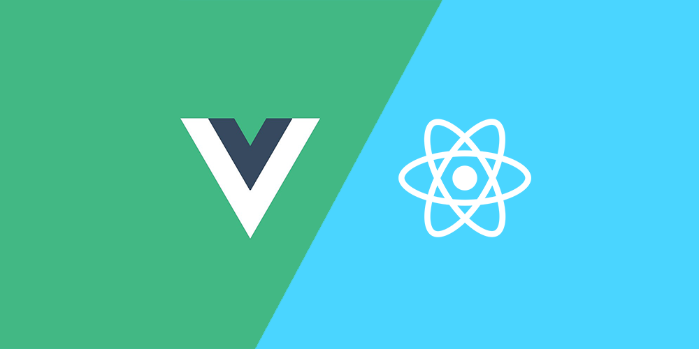
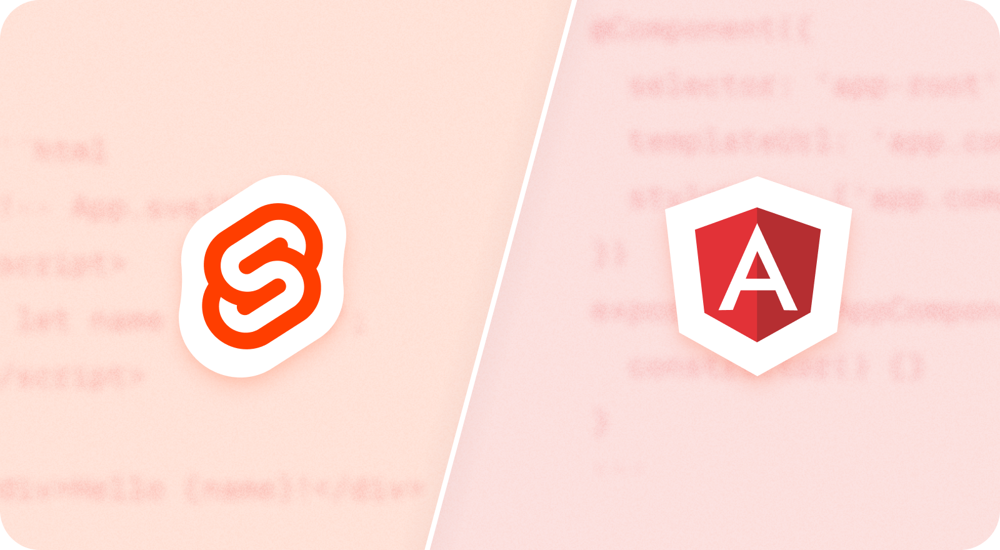
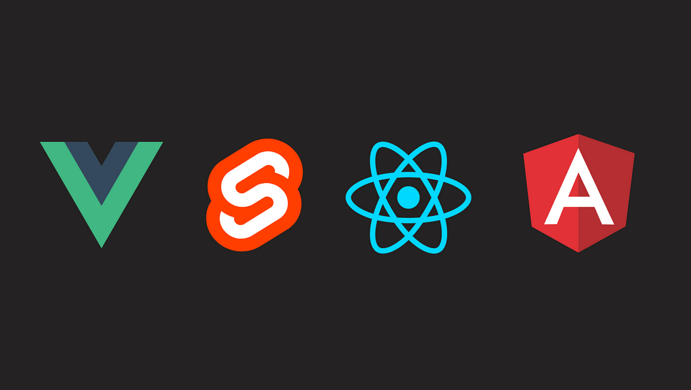

As developers we can probably all agree that web development is changing all the time, especially front-end development and JavaScript frameworks. Mastering one or more of these technologies can elevate your coding. Developers looking for efficiency, performance, and user-friendliness, front-end frameworks are becoming indispensable tools. Today, we’ll show you some must-consider front-end frameworks that have already proven their worth or will pave the way in 2024.
Developed by Facebook (now Meta) in 2013, React continues to hold the top spot as one the most popular front-end frameworks in the ecosystem. It is best known for its efficiency and flexibility for building user interfaces. It’s modern approach to component based architecture promotes modular and maintainable projects. The popularity of React means there's lots of resources and skilled developers who can help you out. It’s been used in and by numerous high-profile projects and companies, which solidifies it’s top place in the industry.
Vue.js has steadily gained ground in recent years and is considered one of the most accessible front-end frameworks. One of the best things about Vue.js is its clear documentation and seamless integration into existing projects. Vue.js also has a lot of tools and libraries to make your life easier. For example it’s got its own way for managing routes (Vue Router) and keeping track of data (reactivity system). Vue.js is designed to make your code easy to read and well structured, which is a big advantage on bigger projects. It’s straightforward integration (you can mix it with other coding tools and add bit by bit) and active community make Vue.js an appealing choice for both beginners and experienced developers.
Developed by Google, Angular is a key player for use in large-scale single-page web applications. With its extensive feature set, including two-way data binding and dependency injection, Angular provides a structured approach to complex projects. It’s learning curve can be pretty steep though, mainly because of its comprehensive nature and the need to understand concepts like TypeScript and RxJS. But if you already know some of this, and have some experience with object-oriented programming, Angular is definitely a solid choice.
Still kind of new but getting popular very fast, Svelte is an emerging framework that offers an entirely new approach to front-end development. Unlike traditional frameworks, Svelte turns your code into super-efficient JavaScript ready for the web, which makes everything run faster. Writing code in Svelte is easier – less complicated than other options. With a growing community and impressive performance, Svelte is undoubtedly a framework to watch in 2024.
Choosing a framework to learn in 2024 depends on your personal knowledge and needs. Whether you're a seasoned developer or just starting out, experimenting with and discovering new technologies is exciting and keeps you on top of your game. If you’re still not sure on deciding which will be the most suitable frontend framework for you, don’t hesitate to contact us. We’ll be glad to help you make an informed decision!